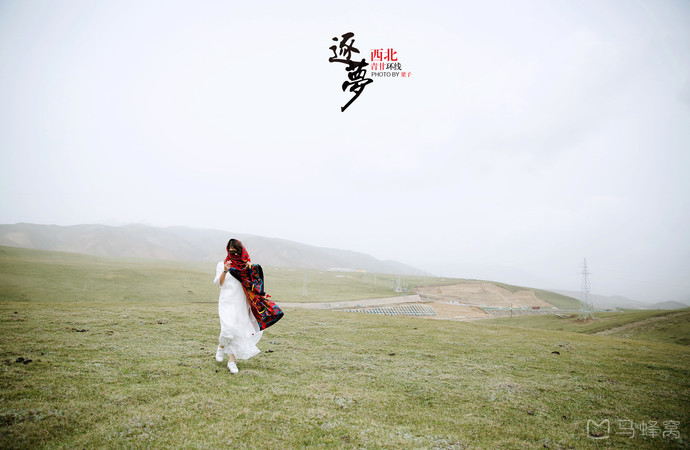
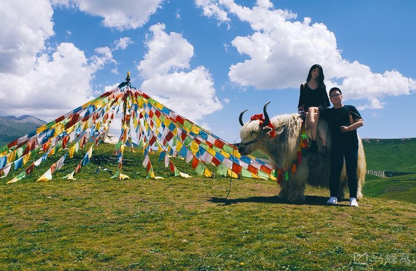
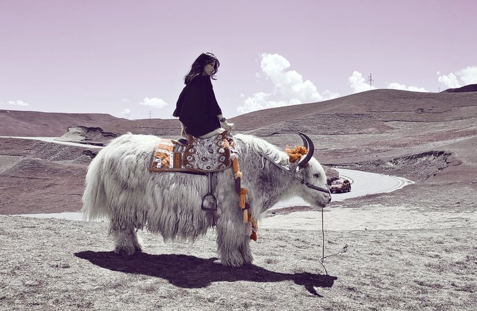
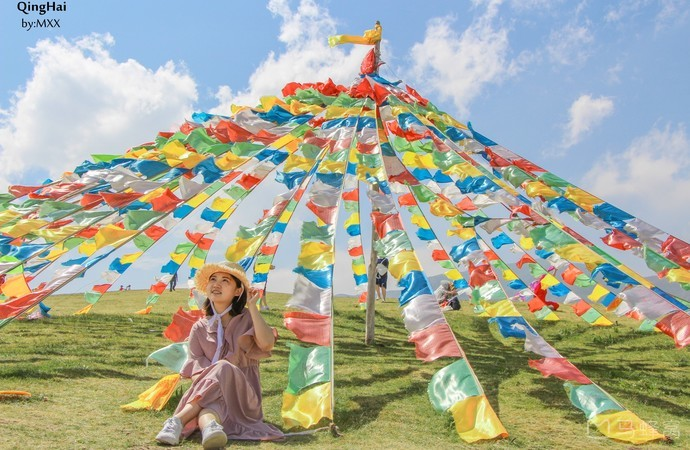
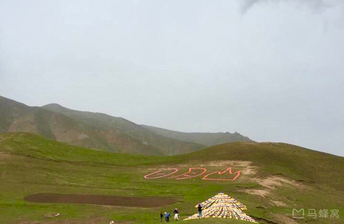
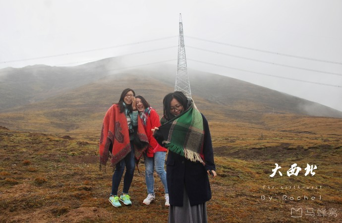
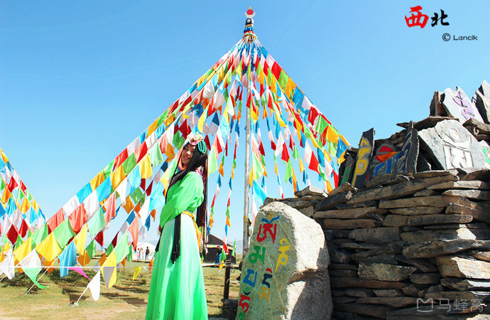

青海湖东部的天然水坝，属祁连山脉，是我国地理上的重要分界线。
因山体呈现红色，故古代称为赤岭，在藏语和蒙古语当中日月山是太阳和月亮的意思。
相传文成公主把宝镜抛在两座小山上，东边映着落日的余晖，西边照着初升的月亮，日月山便因此而得名。
日月山东侧一派塞上江南风光；西侧草原辽阔，牛羊成群，一幅塞外景色。两侧的反差在国内很罕见。
日月山附近草场丰茂，山间有许多经幡随风飘扬，风光秀美。
日月山（车览）
成人票:40人民币







倒淌河
发源于日月山西侧，是一条依靠雪融水和雨水的季节河，青海湖水系中最小的一支。
·相传文成公主嫁到吐蕃路过此处思念家乡，扔了日月宝镜而成日月山，伤心痛哭的眼泪便汇成了这向西行的河流。
·倒淌河的河流蜿蜒曲折，清澈见底，宛如一条亮丽的绸缎飘落在草原上迷人。
